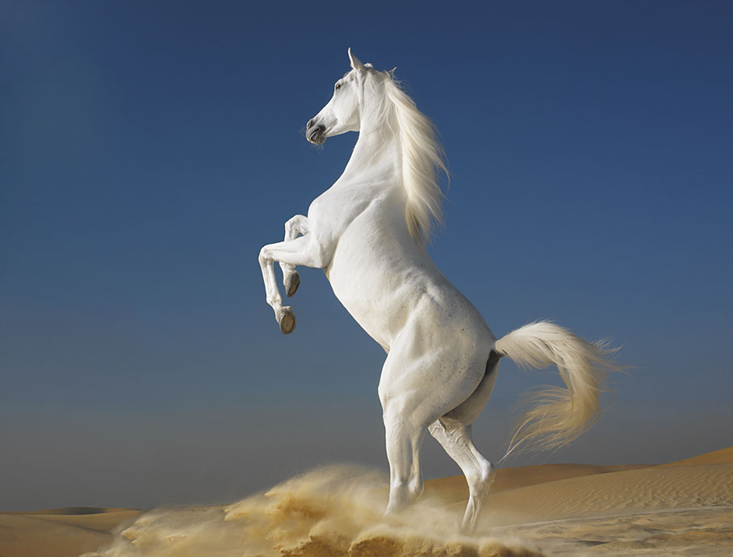

The horse (Equus ferus caballus) is a domesticated, one-toed, hoofed mammal. It belongs to the taxonomic family Equidae and is one of two extant subspecies of Equus ferus. The horse has evolved over the past 45 to 55 million years from a small multi-toed creature, close to Eohippus, into the large, single-toed animal of today.